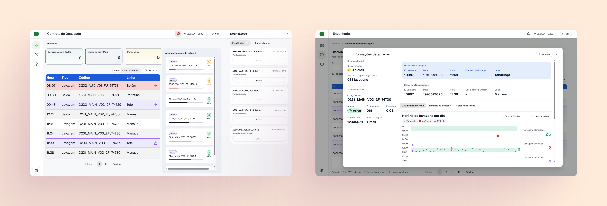

Etapa 2 de 2 · Desenhar o sistema
Criei a rastreabilidade do stencil e testei em 4 rodadas com usuários
A concepção do produto que substituiria os sistemas do setor de lavagem SMT: registro de saída, vistorias com responsável e controle do ciclo de vida dos stencils, testados em quatro rodadas com usuários.
Manufatura eletrônica · Projeto sob NDA: dados e telas anonimizados.

Em resumo
Problema
O sistema registrava só a lavagem. Não havia controle de vistorias, de avarias nem do ciclo de vida dos stencils.
Proposta
Registro de saída, fluxo de vistoria com responsáveis e acompanhamento do ciclo de vida.
Testes
Quatro rodadas com usuários: duas em ambiente controlado e duas em produção, com cronometragem.
Resultado
Cadastro com etiqueta em 1 min 50 s (no sistema antigo, só o cadastro levava 2 min 04 s) e registro de saída em 12 s.
Contexto
Depois do Discovery operacional, começou a fase de concepção do produto digital que substituiria, aos poucos, os sistemas usados pelo setor de lavagem SMT. A ideia era transformar as descobertas do Discovery em uma solução capaz de:
01
Centralizar as informações
02
Apoiar a operação do dia a dia
03
Reduzir a dependência de vários sistemas para consultar, cadastrar e analisar os ativos
Em 8 sprints, foram projetadas as principais funcionalidades do sistema: dashboards, histórico de lavagens, consulta detalhada, gestão de ativos, exportação de relatórios e cadastro de stencils e de modelos de placa.
Problemas
Os principais problemas tinham a ver com a baixa rastreabilidade dos stencils.
01
O sistema registrava apenas a lavagem
02
Não havia controle de quem realizada vistorias
03
Não havia registro de avarias
04
Não havia controle do ciclo de vida dos stencils
Objetivos e soluções
Objetivo 01
Tornar possível a rastreabilidade dos stencils sem mudar radicalmente o fluxo que os operadores já seguiam.
Solução proposta
Incluir uma etapa que registra a saída do stencil para a linha de produção.
Objetivo 02
Sistematizar a vistoria e a validação, que até então aconteciam de maneira informal e sem documentação.
Solução proposta
Criar um fluxo de vistoria dentro do novo sistema, com registro dos responsáveis.
Objetivo 03
Ter previsibilidade sobre o ciclo de vida dos stencils.
Solução proposta
Calcular, a partir das placas produzidas, quantas vezes o stencil foi usado, acumular e mostrar esse número dentro do sistema.
Como o projeto foi construído
Personas e arquitetura da informação
As decisões de interface partiram das necessidades observadas no Discovery.
Sitemap de cada perfil
Principais user flows de cada perfil
Cada etapa do processo passou a ter um perfil responsável. O que antes não tinha rastreio nem dono passou a seguir um fluxo, e cada registro fica ligado ao perfil e à pessoa que o fez.
Operação
Registra a lavagem e a saída do stencil para a linha de produção.
Controle de Qualidade
Entrou no fluxo agora. Faz a vistoria: valida stencils novos e revalida quando há avaria.
Engenharia
Cadastra stencils, define parâmetros de vida útil e gerencia os usuários.
Principais mudanças
01
Registro de saída
Uma funcionalidade nova no perfil de Operação.
02
Cadastro de stencil
Antes, cadastrar um stencil exigia decorar o formato do código e repetir informações em dois sistemas, o que aumentava a curva de aprendizado para funcionários novos.
Sistema antigo
A pessoa decorava a ordem das informações do código
Digitava o código inteiro em um único campo, copiando o que estava gravado no próprio stencil
A etiqueta era gerada em outro programa, fora do sistema dos stencils
As mesmas informações eram preenchidas duas vezes, em dois sistemas
Novo sistema
Um campo separado para cada informação do stencil
O código é gerado automaticamente, em tempo real, e é ele que vai na etiqueta
Ao terminar o cadastro, a etiqueta com QR Code já é gerada
Dá para imprimir na hora ou salvar o arquivo para imprimir depois
Primeiros testes
Fizemos quatro rodadas de testes com usuários para medir os novos fluxos de registro de lavagem e de cadastro de stencil, as principais atividades no uso dos stencils. As duas primeiras foram em ambiente controlado.
1ª rodada
Cadastro de stencil
A funcionária responsável pelo cadastro, no perfil de Engenharia, foi instruída a fazer login e cadastrar um stencil aleatório.
O que observamos
Login
Ela não selecionou o perfil correto, só inseriu as credenciais.
Campos do cadastro
Intuitivos: ela navegou pelo formulário sem dificuldade.
Pontuação de um parâmetro
Precisamos pausar a observação para explicar a pontuação correta.
Mais de um valor no mesmo parâmetro
Ela tentou, mas aquela versão do sistema não permitia.
2ª rodada
Registro de lavagem e de saída
O funcionário responsável pelo registro de lavagem foi instruído a fazer login e registrar a lavagem e a saída de um stencil.
O que observamos
Login
Ele não selecionou o perfil. Como Operação já vinha selecionado por padrão, o login funcionou.
Botões de registro
Bem posicionados e nomeados: ele encontrou e iniciou os dois registros sem dificuldade.
Registro de lavagem
Preencher à mão causou estranheza, porque no sistema antigo essas informações eram selecionáveis.
Registro de saída
Por ser uma etapa nova, ele achou que ela iria atrapalhar o fluxo de trabalho que já existia.
O que mudamos depois
Login
Sem seleção de perfil
Retiramos o campo de perfil antes das credenciais, porque entendemos que ele não era necessário.
Cadastro
Vários valores por parâmetro
Passou a ser possível inserir mais de um valor para o mesmo parâmetro.
Edição de stencil
Observações
Campo de observação e histórico de observações quando o status muda para obsoleto ou descartado.
Operação
Leitura da etiqueta
Ao bipar a etiqueta, o sistema identifica em que etapa o stencil está e abre direto a janela certa: lavagem ou saída.
Gestão de usuários
Linha e técnico
Cada linha de produção fica relacionada a um técnico, então o técnico não precisa mais ser preenchido quando a linha é selecionada.
Gestão de usuários
Nomes em menu
Operadores de lavagem e funcionários de Engenharia aparecem em um menu nos formulários, em vez de terem o nome digitado.
Testes em produção
As duas últimas rodadas foram feitas já no ambiente de produção, comparando o sistema antigo com o novo sistema e cronometrando os tempos.
3ª rodada
Cadastro de stencil
A funcionária responsável pelo cadastro, no perfil de Engenharia, foi instruída a fazer login e cadastrar um stencil aleatório nos dois sistemas.
Tempo cronometrado
Sobre a medição
No sistema antigo, não medimos o tempo para gerar e imprimir a etiqueta, que era feita em outro programa. No novo sistema, o tempo inclui o processo inteiro, do cadastro à impressão.
4ª rodada
Registro de lavagem e de saída
Os funcionários responsáveis pelo registro de lavagem foram instruídos a fazer login e registrar a lavagem e a saída de um stencil nos dois sistemas.
Tempo cronometrado
O que queríamos
No registro de lavagem, nosso principal objetivo era aumentar o mínimo possível o tempo gasto com o novo registro. Consideramos que o objetivo foi alcançado, porque não houve aumento significativo.
Entregas
01
Perfis e responsabilidades: Operação, Controle de Qualidade e Engenharia
02
Validação inicial e revalidação por avaria pelo Controle de Qualidade
03
Históricos de movimentações e de vistorias
04
Registro de lavagem e novo registro de saída
05
Cadastro estruturado, com código e etiqueta gerados pelo sistema
06
Acompanhamento de vida útil por ciclos
Aprendizados
Todo registro novo custa tempo para quem opera. O primeiro teste mostrou que não bastava a etapa existir: ela precisava dar pouco trabalho.
Detalhes como reconhecer a etapa pela etiqueta ou preencher um nome sozinho fazem diferença para quem repete esse registro todo dia.
Se eu fosse fazer de novo, faria os testes com usuários mais cedo, antes de ir para o código. Assim, o MVP já seria implementado o mais perto possível do resultado esperado.